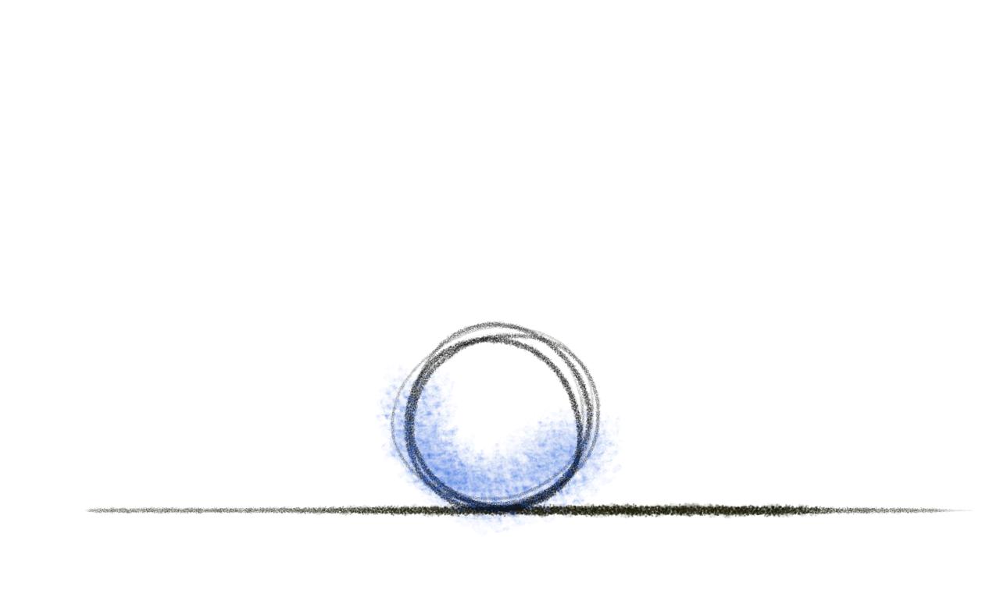
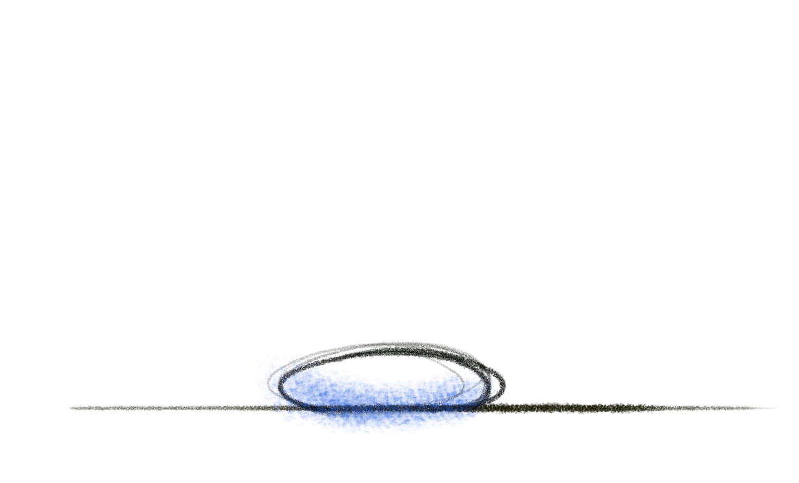
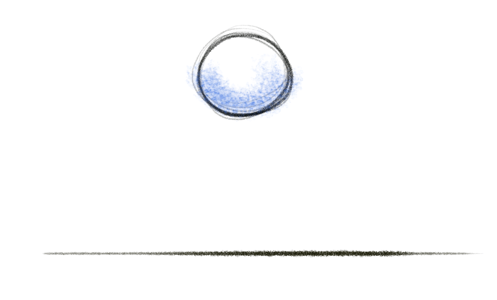
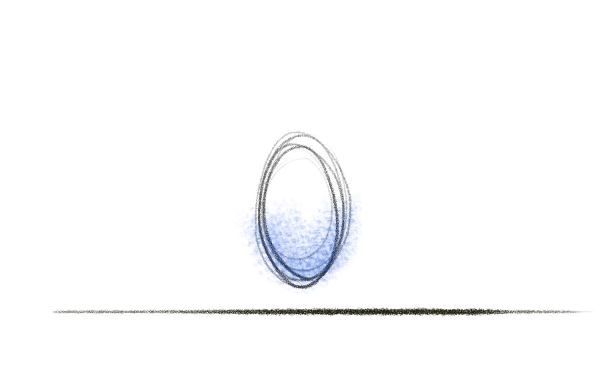
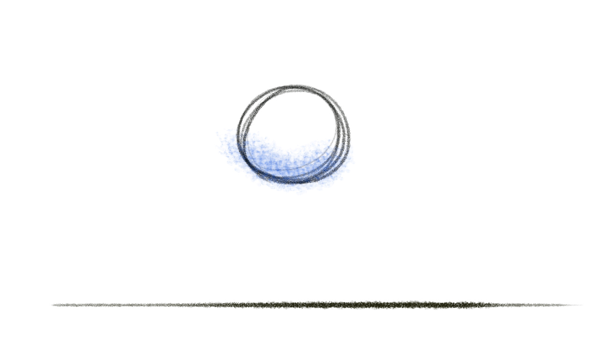
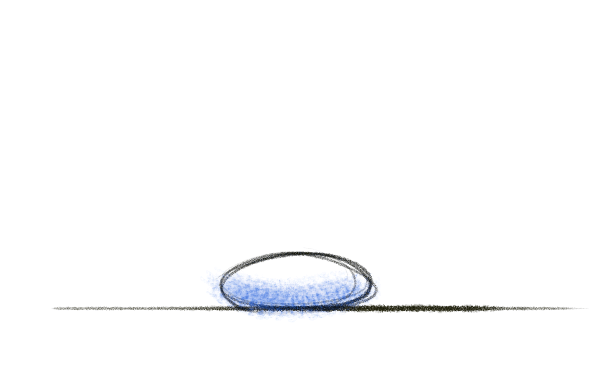
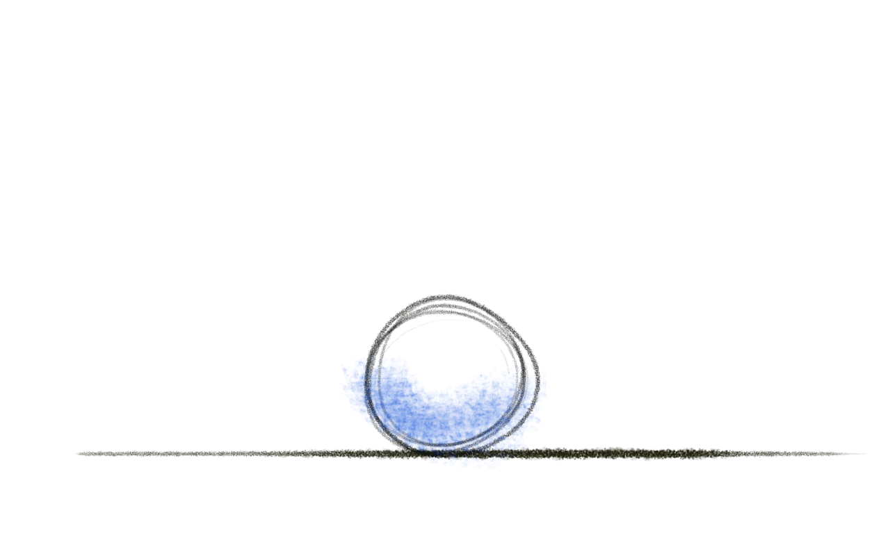

Identify the Keyframes

Watch the complex action above. Below is a 10-frame filmstrip of the sequence. Click on the 3 frames that represent the extreme "keyframes" of the action, separating them from the transitional frames.








